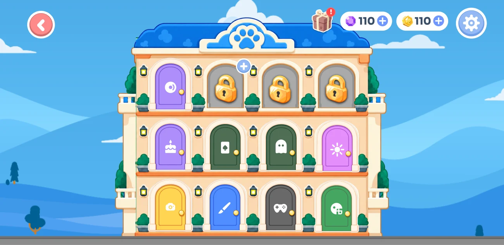
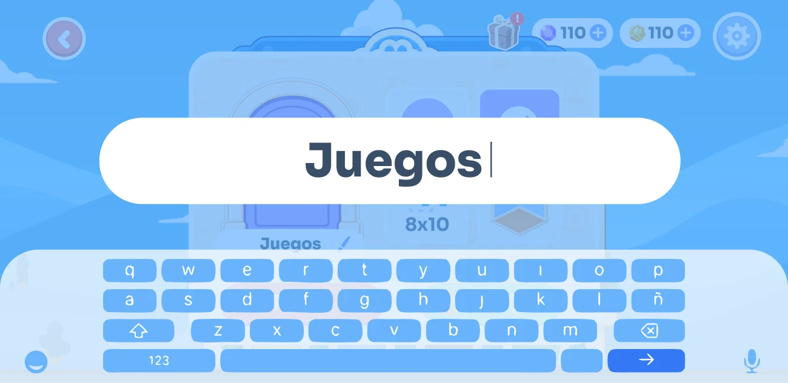
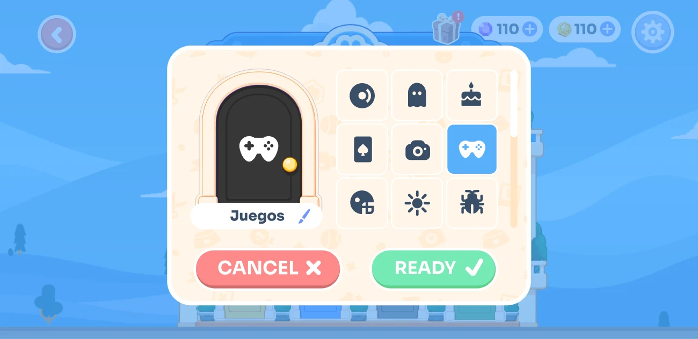
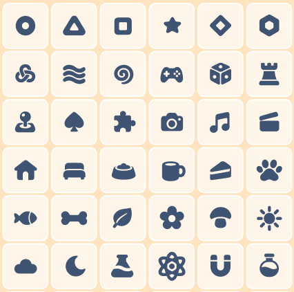

Construcción
Crear un cuarto
Todo empieza con una puerta libre en el edificio. Elige cuánto espacio tendrán tus Yunipets, dale un nombre al cuarto y ponle un emblema para reconocerlo desde fuera.
Del edificio al interior

Elegir una puerta
La fachada reúne los cuartos en un mismo lugar. Las puertas con emblema identifican las habitaciones creadas. El signo «+» señala dónde puedes empezar la siguiente.

Un nombre para el cuarto
Al tocar el nombre bajo la puerta se abre el teclado. En el diseño de Figma, el cuarto se llama «Juegos». En el gameplay puedes ver cómo «New Room» pasa a llamarse «Big room».

Reconocerlo desde fuera
El color y el emblema se combinan en la vista previa de la puerta. Un control identifica el cuarto de juegos en Figma. En la grabación, el jugador elige una nota musical sobre una puerta rosa.

Un símbolo para cada uso
Una cama puede señalar el dormitorio y una taza, la cocina. El catálogo también incluye letras y números para distinguir varios cuartos del mismo tipo.
Ver todos los emblemas ↗
Combinar paredes y piso
Prueba un color liso o elige una textura. Los colores de paredes y pisos son provisionales. Las paredes se arman con módulos de 2 × 4 y el piso con losetas de 1 × 1.
Del cuarto vacío al cuarto habitado
Definir el espacio
En la grabación, el jugador cambia de 12 × 8 a 14 × 8. El botón de creación muestra los recursos necesarios antes de confirmar.
Distribuir los muebles
Dentro del cuarto nuevo se abre el inventario. Se elige un mueble, se coloca sobre la cuadrícula y se ajustan su posición y orientación.
Explorar el editor de muebles →Asignar los Yunipets
Toca el retrato de la mascota en la esquina inferior izquierda. Junto a sus indicadores aparece una huella. Tócala para elegir en qué habitación vivirá ese Yunipet.
Ver el flujo completo ↗